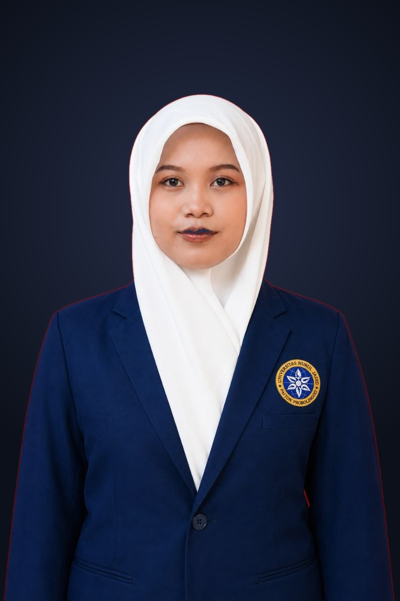

Halo, saya Sugiati (Jia) —
Web Developer &
System Analyst
Lulusan S1 Teknologi Informasi yang memiliki fokus berkarier di bidang System Analyst dan Web Development. Berpengalaman dalam analisis kebutuhan sistem, identifikasi permasalahan, perancangan alur proses bisnis, pengelolaan database, serta pengembangan aplikasi berbasis web menggunakan Laravel, PHP, dan MySQL.
0
IPK Akademik / 4.00
0
Studi Kasus & Proyek
0
Pengalaman Lapangan

Tentang Saya
Menghubungkan analisis proses bisnis yang matang dengan pengembangan web yang fungsional dan nyaman digunakan.
Profil Profesional
Lulusan S1 Teknologi Informasi dari Universitas Nurul Jadid yang memiliki minat berkarier di bidang System Analyst dan Web Development. Memiliki pengalaman dalam analisis kebutuhan sistem, identifikasi permasalahan, perancangan alur proses bisnis, pengelolaan database, serta pengembangan aplikasi berbasis web menggunakan Laravel, PHP, dan MySQL.
Terbiasa melakukan pemecahan masalah (problem solving), dokumentasi sistem (Flowchart & DFD), dan pengujian aplikasi. Memiliki kemampuan berpikir analitis, teliti, adaptif, dan mampu bekerja sama dalam tim.
Selain pengembangan sistem, saya juga memiliki pengalaman dan menyediakan layanan dalam memperbaiki serta merapikan format penulisan skripsi / dokumen akademik agar sesuai dengan pedoman dan standar tata letak kelembagaan.
“Sebuah sistem hanya akan sekuat kejernihan logika dasarnya dan kenyamanan manusia yang menggunakannya setiap hari.”
— Sugiati (Jia)
Domisili & Ketersediaan
Kab. Probolinggo, Jawa Timur, Indonesia
Siap untuk On-site, Hybrid, maupun Remote
Metodologi Pengembangan
Extreme Programming (XP)
Pendekatan iteratif, adaptif terhadap perubahan kebutuhan, pengujian intensif, dan umpan balik pengguna secara berkelanjutan.
Layanan Tambahan
Perbaikan & Kerapian Penulisan Skripsi
Standarisasi gaya selingkung, penomoran otomatis, daftar isi/tabel, serta kerapian tata letak dokumen akademik.
Keterampilan Berdasarkan Bidang
Kombinasi keahlian teknis dan metodologis yang terasah melalui pengalaman nyata.
Perancangan Sistem
Analisis kebutuhan pengguna, identifikasi titik hambatan, serta perancangan skema data dan alur sistem.
Web Development
Membangun aplikasi web modular, responsif, dan terintegrasi dengan database relasional terstruktur.
Dokumentasi & Administrasi
Penyusunan berkas spesifikasi teknis, pengelolaan data akurat, dan standardisasi dokumen.
Studi Kasus & Proyek
Dokumentasi asli proyek pengembangan sistem, inovasi proses, dan perancangan alur. Gambar tampil penuh (full-bleed) dan dapat diklik untuk memperbesar resolusi tinggi.
SIAKAD — Sistem Informasi Akademik (SMK Swasta Sunan Giri)
Menganalisis kebutuhan dan merancang sistem informasi akademik untuk mengintegrasikan data siswa, guru, kelas, mata pelajaran, dan penilaian dalam satu platform terpusat. Mengembangkan aplikasi berbasis Laravel, PHP, MySQL, dan Bootstrap dengan modul penilaian otomatis serta pengelolaan rapor digital untuk mengeliminasi input data berulang. Dilengkapi dukungan Progressive Web App (PWA) yang dioptimasi untuk kenyamanan akses pada perangkat mobile pengguna serta fitur notifikasi. Melakukan perancangan database, dokumentasi sistem (Flowchart dan DFD), serta pengujian menggunakan Black Box Testing.
Aplikasi & Framework yang Digunakan:
SMK Swasta Sunan Giri, Kota Probolinggo • Juni – Juli 2026
Sistem Voucher Kembalian — Laundry Al-Hasyimiyah Nurul Jadid
Mengelola pencatatan transaksi, pembayaran, serta pelayanan penerimaan dan pengambilan laundry santri. Mengidentifikasi kendala pencatatan uang kembalian yang memicu antrean panjang, lalu merancang solusi mekanisme voucher untuk mempercepat proses pengambilan serta mengurangi antrean santri. Membuat prototype voucher interaktif menggunakan Figma dan menerapkannya dalam bentuk voucher cetak operasional.
Aplikasi Desain & Analisis:
Pondok Pesantren Nurul Jadid, Kab. Probolinggo • Jan – Feb 2026
Literasi Digital, Canva & Publikasi Sekolah (SMP Negeri 3 Wonomerto)
Berkolaborasi dengan dewan guru dan tim mahasiswa dalam menyusun serta melaksanakan Rencana Aksi Kolaborasi (RAK). Mendampingi siswa dalam pembelajaran Bahasa Inggris serta pemanfaatan Microsoft Word dan Canva untuk meningkatkan literasi digital. Mengelola media sosial, dokumentasi terstruktur, dan publikasi kegiatan sekolah bersama tim.
Aplikasi yang Digunakan:
SMP Negeri 3 Wonomerto, Kab. Probolinggo • Feb – Jun 2024
Pemodelan Sistem Informasi Akademik & Sistem Monitoring Santri KIP (Draw.io)
Menyusun analisis kebutuhan, pemodelan proses bisnis, dan dokumentasi arsitektur data komprehensif menggunakan Draw.io yang mencakup 2 studi kasus nyata:
Merancang komparasi Flowchart Sistem Lama (rekap Excel manual yang rentan inkonsistensi) vs Flowchart Sistem Baru (otomatisasi Kurikulum Merdeka & e-rapor), Diagram Konteks DFD Level 0, dan Entity Relationship Diagram (ERD 3NF) multi-tabel relasional.
Merancang arsitektur sistem pengelolaan santri penerima beasiswa KIP, mencakup Diagram Hirarki Fungsional (HIPO), DFD Level 0, DFD Level 1 (alur master data, jadwal tugas, absensi kegiatan, dan laporan pembina), serta dekomposisi DFD Level 2.
Aplikasi & Standar Pemodelan:
Riwayat Pendidikan & Pengalaman
Perjalanan akademik dan kontribusi profesional nyata di lapangan.
S1 Teknologi Informasi
Universitas Nurul Jadid • Kab. Probolinggo, Jawa Timur
Mendalami Rekayasa Perangkat Lunak, Desain Basis Data Relasional, Sistem Informasi, dan Perancangan Alur Proses Bisnis.
Pengembangan Sistem Informasi Akademik (SIAKAD)
SMK Swasta Sunan Giri • Kota Probolinggo
Menganalisis kebutuhan dan merancang sistem informasi akademik terintegrasi untuk siswa, guru, kelas, mata pelajaran, dan penilaian. Membangun modul penilaian otomatis dan rapor digital dengan Laravel, PHP, MySQL, dan Bootstrap. Menyusun dokumentasi Flowchart & DFD serta menjalankan Black Box Testing.
Staff Administrasi Laundry Al-Hasyimiyah
Pondok Pesantren Nurul Jadid • Kab. Probolinggo
Mengelola transaksi operasional penerimaan dan pengambilan cucian santri. Mengidentifikasi kendala pencatatan uang kembalian dan merancang solusi voucher terindeks menggunakan prototipe Figma hingga penerapannya dalam bentuk voucher cetak fisik.
Kampus Mengajar Angkatan 7
SMP Negeri 3 Wonomerto • Kemendikbudristek
Menyusun dan mengeksekusi Rencana Aksi Kolaborasi (RAK), mendampingi siswa dalam pembelajaran Bahasa Inggris, pelatihan Microsoft Word, dan desain kreatif dengan Canva. Mengelola media sosial sekolah, dokumentasi visual, dan publikasi kegiatan.
Hubungi Saya Langsung
Apakah Anda sedang mencari kandidat Web Developer atau System Analyst, membutuhkan konsultasi pemodelan sistem, atau memerlukan bantuan perapian dokumen skripsi? Silakan hubungi saya melalui email atau WhatsApp.
Nomor WhatsApp Resmi
083164900791
Alamat Email Resmi
parksugiati@gmail.comAlamat Domisili
Desa PohSangit Leres, Kec. Sumberasih, Kab. Probolinggo, Jawa Timur
Kirimkan Pesan Langsung
Tuliskan kebutuhan atau peluang kerja sama Anda di bawah ini; email client Anda akan terbuka otomatis.
© 2026 Sugiati (Jia). Seluruh Hak Cipta Dilindungi. Web Developer & System Analyst.